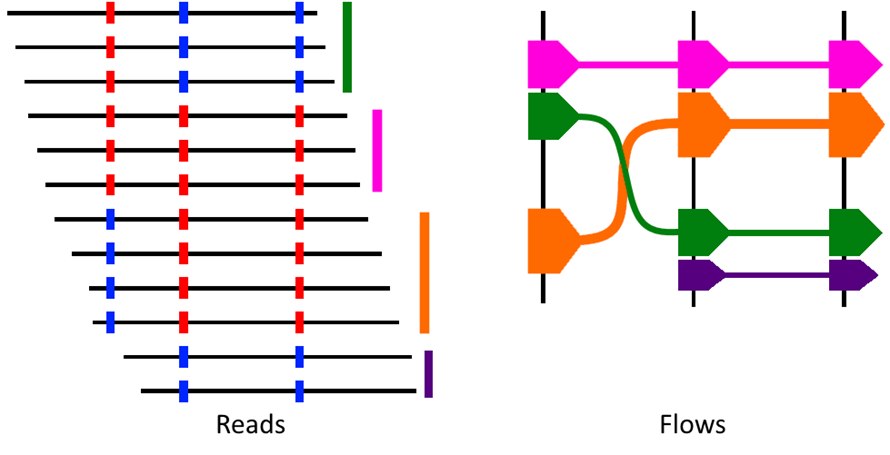
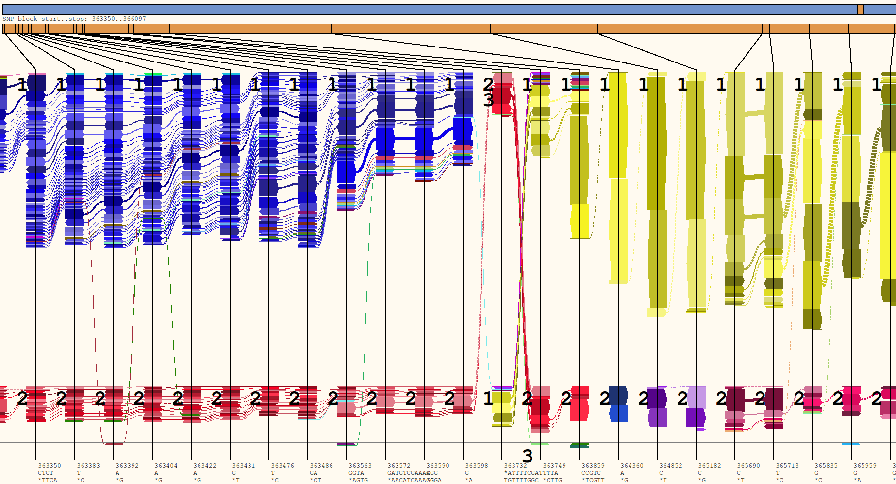
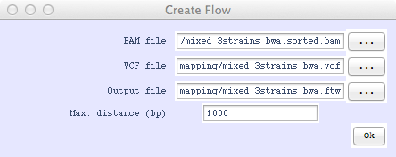
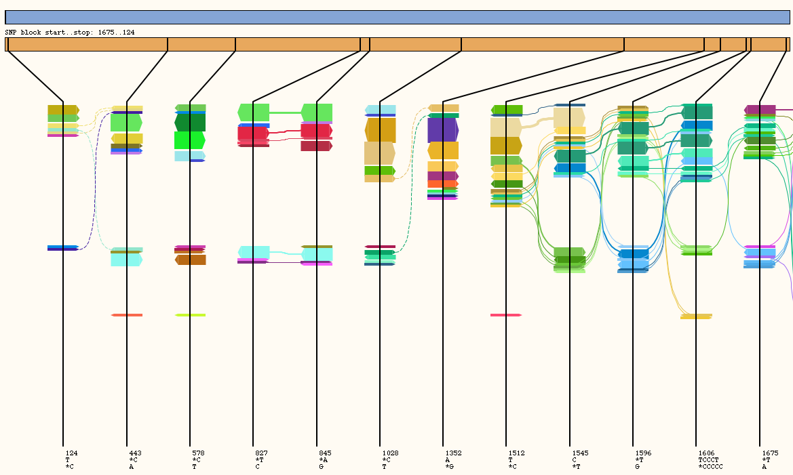
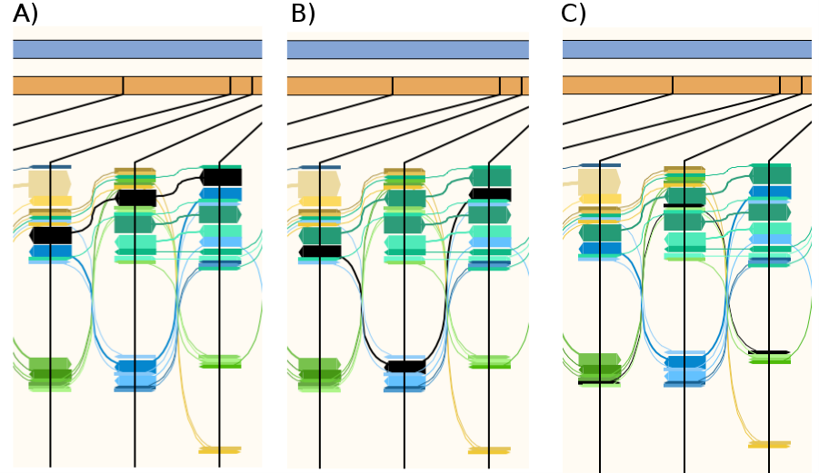

HapFlow
Quickstart
Tutorial 1 - Exploring a premade flow file.
Tutorial 2 - Creating a flow file.
Quick Start
Loading and interpreting a flow file
To load a flow file simply select File -> Load Flow from the menu.
Interpreting the flow file. HapFlow determines the variant profiles of all reads. It then creates a flow for each unique variant profile. Each flow represents a read or reads with that variant profile. Width of the flow indicates the proportion of reads with the profile. Black vertical lines indicate variants and position of the flow in the Y axis indicates which variant is present at that position in the flow. Direction of the arrow indicates the direction of the reads from which the flow was created.
Creating a flow file (GUI)
To create a flow file you will need an indexed BAM file and a VCF file of called variants. For instructions on how to create a
indexed BAM and VCF file see Tutorial 2.
Please note: Some variant callers are designed to run on sequencing
from diploid cells and assume variants will be present at either 50% or 100% of your reads. These programs are not suitable for
detecting variants in mixed strain bacterial samples. We recommend using FreeBayes.
To create a Flow file from the GUI simply go to File->Create Flow and select an indexed BAM file, a VCF file and your output file.
Flow files can also be created from the command-line, for instructions please download the manual.
Tutorial 1 - Exploring a premade flow file.
This tutorial will let you explore a premade flow file and show you how to separate reads into two operational taxonomic units. In the interest of keeping the example files small only reads aligned to bases 360,000..380,000 were used. This tutorial assumes you have downloaded and extracted tutorial1.zip from the HapFlow website.
- 1) Launch HapFlow by double clicking on the .exe or app file.
- 2) Load flow by selecting File -> Load flows and then choosing example1.flw
- 3) Explore the flow file by scrolling from left to right.
- 4) Hide lines marking flows with gaps by selecting view -> hide gapped.
- 5) Adjust the amount of variants displayed by pressing A and D on your keyboard.
- 6) Adjust the height of the flows by pressing W and S on your keyboard.
- 7) Left click on a Flow to highlight the flow, right click to bring up options relating to the flow.
- 8) Go to the variant at base 363,350 by selecting tools -> goto base and typing in 363350
- 9) Define OTU 1 by double clicking variants along the top and middle rows.
- 10) Define OTU 2 by selecting tools-> Select OTU -> 2 and then double clicking variants along the top and middle rows.
- 11) Define OTU 3 by selecting tools-> Select OTU -> 3 and then double clicking positions of the flow with an erroneous base.
- 12) Write OTUs to BAM by selecting tools -> Write OTUs and then choosing the downloaded BAM file and defining a prefix for output file. Files will be written to prefix.1.bam prefix.2.bam and prefix.3.bam
OSX and Linux only.
 Chlamydia sample with selected OTUs
Tutorial 2 - Creating a flow file.
This tutorial will cover the approach for generating BAM and VCF for read data containing three Chlamydia pecorum strains and visualizing the haplotypes with HapFlow.
In the tutorial folder are two FASTQ files containing simulated paired-end Illumina reads based on the complete genome of C. pecorum E58 at 20x coverage, C. pecorum PV3056 at 10x coverage and C. pecorum PV787 at 5x coverage mixed together to represent a mixed infection. The FASTQ files are called “mixed_3strains_R1.fastq” and “mixed_3strains_R2.fastq”. Also included in the tutorial folder is a FASTA file of the complete genome C. pecorum W73, which will be used as a reference genome.
1) The BAM file can be created by aligning the simulated Illumina reads against the reference genome, C. pecorum W37 using BWA and Samtools.
% bwa index Cpecorum_W37.fasta % bwa aln Cpecorum_W73.fasta mixed_3strains_R1.fastq > read1.sai % bwa aln Cpecorum_W73.fasta mixed_3strains_R2.fastq > read2.sai % bwa sampe Cpecorum_W73.fasta read1.sai read2.sai mixed_3strains_R1.fastq \ mixed_3strains_R2.fastq > mixed_3strains_bwa.sam % samtools faidx Cpecorum_W73.fasta % samtools import Cpecorum_W73.fasta mixed_3strains_bwa.sam mixed_3strains_bwa.bam % samtools sort mixed_3strains_bwa.bam mixed_3strains_bwa.sorted % samtools index mixed_3strains_bwa.sorted.bam2) The VCF file can be created using Freebayes
% freebayes -f Cpecorum_W73.fasta -p 3 –F 0.03 mixed_3strains_bwa.sorted.bam \ > mixed_3strains_bwa.vcf-p 3 sets ploidy to 3
-F 0.03 – only show variants present in more than 0.03 of the reads.
3) Launch HapFlow by double clicking on the executable or from the command-line. % python HapFlow.py 4) In the top menu bar, select File -> Create Flow File and load “mixed_3strains_bwa.sorted.bam” in the BAM file box and “mixed_3strains_bwa.vcf” for the VCF file box. Save the output as “mixed_3strains_bwa.ftw.” This step may take a few minutes.
 Figure 1: The Create Flow menu is where the BAM and VCF file make the flow file.
5) Select File -> Load Flow File and load “mixed_3strains_bwa.ftw”. The following screen will appear in a few seconds. The x-axis can be extended by selecting View -> Stretch X or by hitting “D” on the keyboard.  Figure 2: Hapflow diagram of simulated Illumina read data.
6) The orange rectangle with vertical lines represents where the variants are located within the displayed section of the genome, these lines are extended below and spaced an equal distance apart in the area where the flows are viewed. Each flow consisting of one or more reads is represented as one or more arrows overlapping each variant line that the reads of the flow align to. Width of the arrow represents the number of reads within that flow. A solid line joins variants on the same read of a pair.
7) Click on the arrows to highlight individual flows. Figure 3 show a section of the HapFlow profile where the three strains are visualised as flows. Figure 3A-C shows the flows containing a different combination of three single nucleotide polymorphisms (SNPs). Figure 3A represent C. pecorum E58 the most dominate strain (20x coverage) in the read data; hence why this flow has the thickest arrows of the three strains. Figure 3B show a flow associated with C. pecorum PV3056 the second most prevalent strain (10x coverage). Figure 3C marks the flow for C. pecorum P787, which is the least prevalent strain (5x coverage). Right click on the flow will display the options to retrieve the read names for flow or extract the reads as a BAM file.  Figure 3: A section of Hapflow profile showing three SNPs (the black vertical lines in orange bar). Panel A-C shows three separate haplotypes (black arrows) representing the three C. pecorum strains. A) C. pecorum E58 flow. B) C. pecorum PV3056 flow. C) C. pecorum P787 flow.